Multi Screen Hell
DevFest 2013, Ankara
Why Hell?
Manufacturers
- Acer
- Asus
- HTC
- LG
- Motorola
- Samsung
- Sony
- ...
Fragmentation
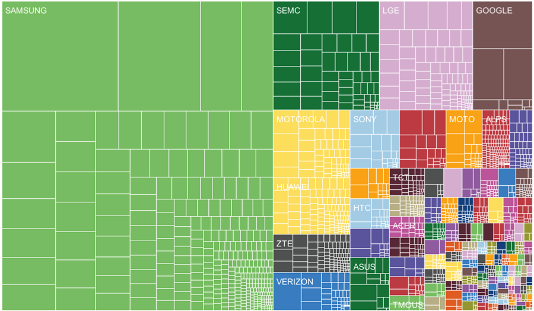Device Types
11.868 distinct Android devices seen in 2013
Phones
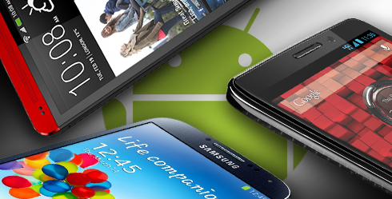Tablets
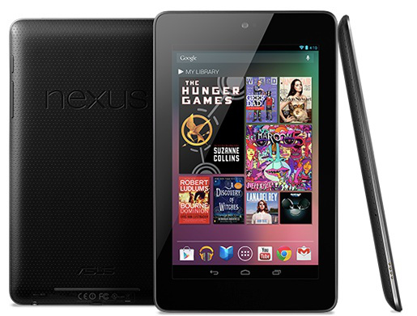Laptops
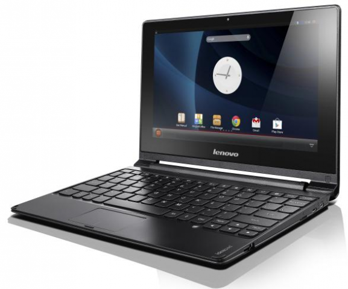TV
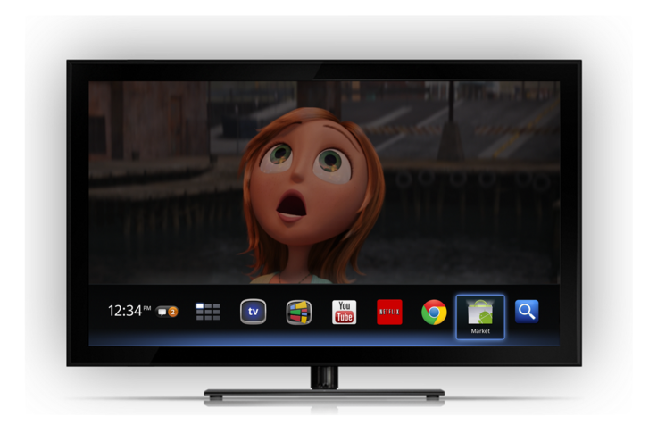Set-Top-Box
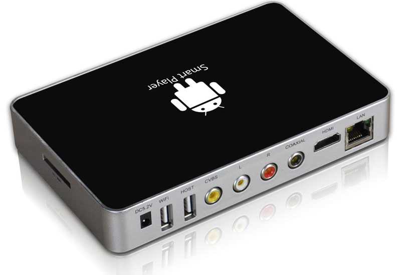Consoles
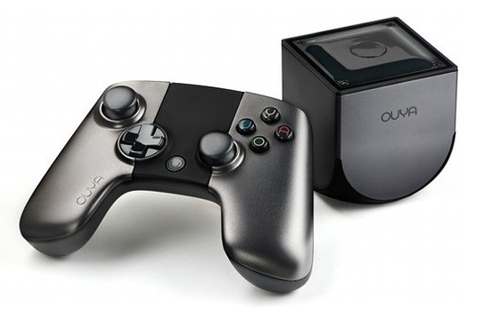Everywhere
Internet of Things (IoT)?
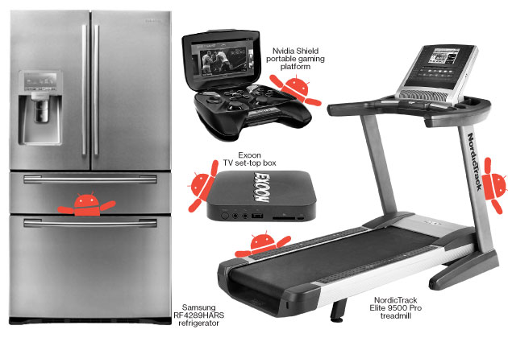Behind the 'Internet of Things' Is Android and It's Everywhere
Size & Resolution
2.8 in, 3.2 in, 3.5 in, 3.6 in, 3.7 in, 4.0 in, 4.3 in, 4.5 in, 4.7 in, 4.8 in, 5.0 in, 6.4 in, 7.0, 9.7 in, 10.1 in, ...
320x240 QVGA, 480x320 HVGA, 800x480 WVGA, 960x540 qHD, 1280x768 WXGA, 1280x720 HD, 1920x1080 HD, ...
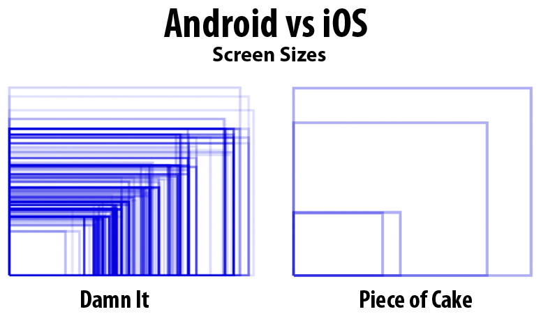API Versions
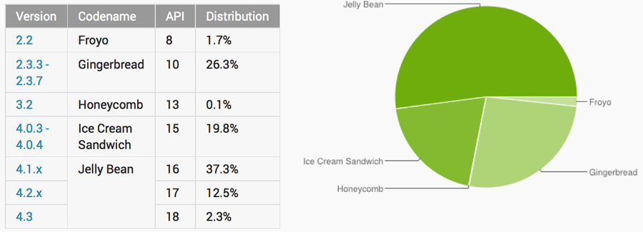Orientation
Landscape or Portrait?
Keep Calm
and
Çare Drogba
Supporting
Multiple Screens
Range of Screens Supported
- sizes: small, normal, large, and xlarge
- densities: ldpi (low), mdpi (medium), hdpi (high), and xhdpi (extra high)
Size and Density Group
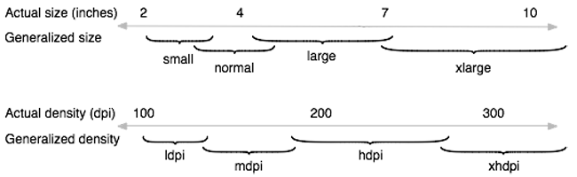Density-independent Pixel (dp)
A virtual pixel unit that you should use when defining UI layout, to express layout dimensions or position in a density-independent way.
The density-independent pixel is equivalent to one physical pixel on a 160 dpi screen (medium density)
Conversion
px = dp * (dpi / 160)
Ex: on a 240 dpi screen, 1 dp equals 1.5 physical pixels
Density Independence
It preserves the physical size of user interface elements when displayed on screens with different densities
- The system scales dp units as appropriate for the current screen density
- The system scales drawable resources to the appropriate size, based on the current screen density, if necessary
Bad

Good

How to Support Multiple Screens?
Use <supports-screen>
Explicitly declare in the manifest which screen sizes your application supports
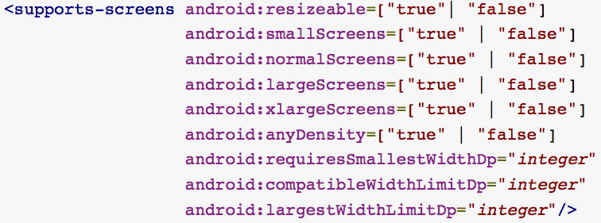Provide different layouts for different screen sizes
-
Provide size-specific resources: small, normal,
large, and xlarge
- Ex: layout-xlarge/
- Use the sw<N>dp configuration qualifier to
define the smallest available
width (beginning API 13)
- Ex: layout-sw600dp/ (at least 600dp screen width)
Provide different bitmaps
- By default, Android scales drawables (.png, .jpg, .gif and .9.png files)
- Include alternative versions at different resolutions for different screen densities
-
Density-specific resources are ldpi (low), mdpi
(medium), hdpi (high), and xhdpi (extra high)
- Ex: drawable-hdpi/
Configuration Qualifiers
Usage: <resources_name>-<qualifier>
- <resources_name> is the standard resource name (such as drawable or layout)
- <qualifier> is a configuration qualifier (such as hdpi or xlarge)
Layouts & Drawables
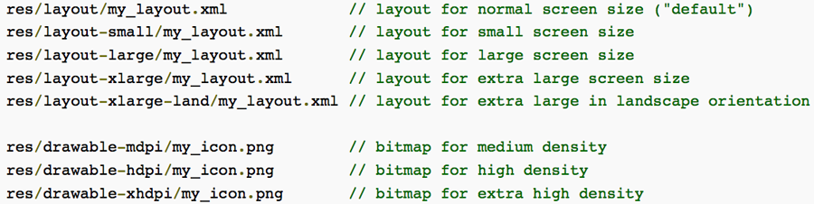Alternative Drawables
- You only need to provide density-specific drawables (.png, .jpg, .gif or .9.png)
-
Follow the 3:4:6:8 scaling ratio between the four generalized densities
- 36x36 for low-density
- 48x48 for medium-density
- 72x72 for high-density
- 96x96 for extra high-density
- See Icon Design Guideline
Relative Sizes
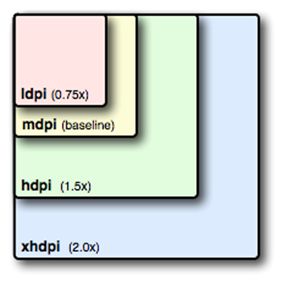Tablet Layouts for Android 3.2
Android 3.2 introduces a new way to specify resources for more discrete screen sizes
New Size Qualifiers
-
smallestWidth: sw<N>dp
- Ex: sw600dp
- Available screen width: w<N>dp
- Ex: w1024dp
- Available screen height: h<N>dp
- Ex: h720dp
Configuration Examples
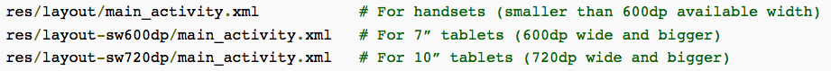 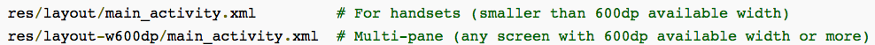Best Practises
1. Use wrap_content, match_parent, or the dp unit for layout dimensions
Using wrap_content, match_parent or dp units guarantees that the view is given an appropriate size on the current device screen
PS: Use sp for font sizes
2. Do not use hard-coded pixel values in your application code
3. Use RelativeLayout
It uses relative positioning to lay out its child views
For instance, you can specify that a button widget should appear "to the right of" a text widget
4. Use size and density-specific resources
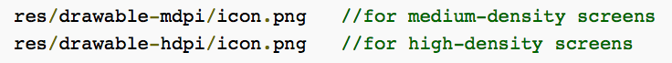PS: To avoid pre-scaling, put the resource in a resource directory with the nodpi configuration qualifier
5. Use Nine-patch Bitmaps
They are specially formatted PNG files that indicate which areas can and cannot be stretched
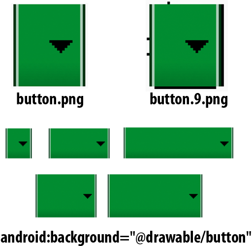Tablets
&
Handsets
Basic Guideline
1. Build your activity designs based on Fragments
Fragment
- Introduced in Android 3.0 (API Level 11)
- It allows you to separate distinct behavioral components of your UI into separate parts
- Provides modular UI development
- PS: Use Android Support Libraries to use fragments in older Android versions
Multiple Fragments, Multiple Activities
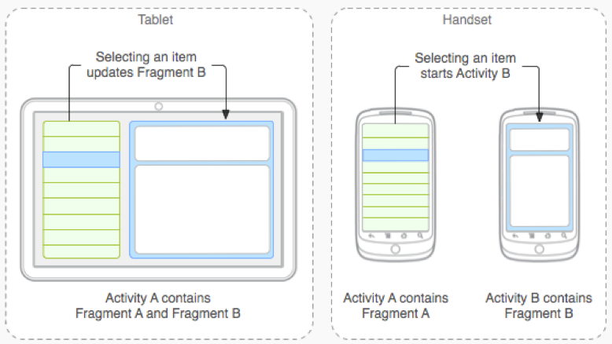Handsets
res/layout/main.xml
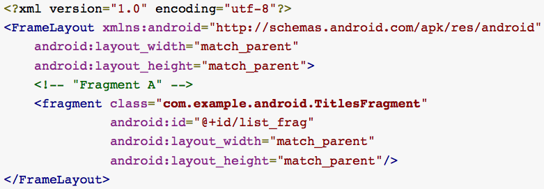Tablets
res/layout-large/main.xml
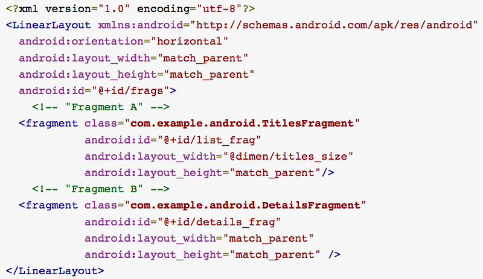PS: You should also use the new minimum width size qualifiers in order to more precisely control the screen size
How is it work?
- If Fragment B is in the layout, Activity A notifies Fragment B to update itself
- If Fragment B is not in the layout, Activity A starts Activity B (which hosts Fragment B)
- Important Note: Define a callback interface in each fragment class to communicate with host activity
2. Use the Action Bar
The action bar is a window feature that Action Baridentifies the user location, and Action Barprovides user actions and Action Barnavigation modes

Introduced in Android 3.0 (API Level 11). However, you can use t using Android Support Libraries
Why Action Bar?
Android system does all the work to gracefully adapt the action bar for different screen sizes
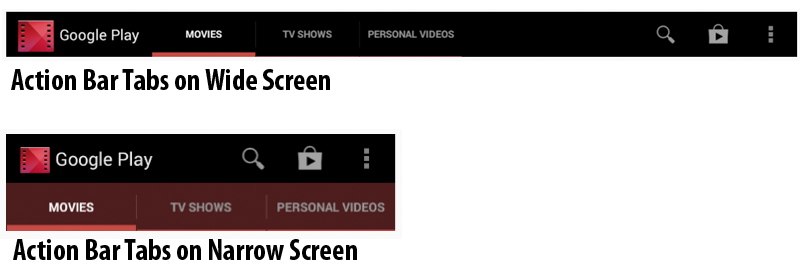Tips for creating Action Bar
1. Avoid using the always value
- Forcing too many action items into the action bar can create a cluttered UI
- Action items may overlap with other action bar elements such as the title or navigation items
- Use ifRoom for the android:showAsAction attribute
2. Provide an Icon
- Always provide an icon for the action items
- Use showAsAction="ifRoom|withText"
3. Provide a Title
- Always provide a title
- Users view the title as a tooltip on long-click
- It is critical for accessibility: Screen readers read aloud the item title even when not visisble
4. Avoid using custom navigation modes when possible
- Use the built-in tab and drop-down navigation modes when possible
- System can adapt their presentation to different screen sizes automatically
- Ex: stacked action bar in handsets
Split Action Bar
- Available in Android 4.0 (API level 14) and higher
- Add uiOptions="splitActionBarWhenNarrow" to your <activity> or <application> manifest element
- Call setDisplayShowHomeEnabled(false) to disable the application icon in the action bar
Testing
Use Emulator with different configs
emulator -avd <avd_name> -scale 96dpi
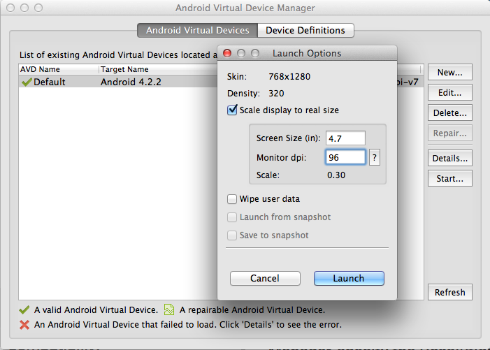Android Studio
Built in device previews (landscape and portrait modes)
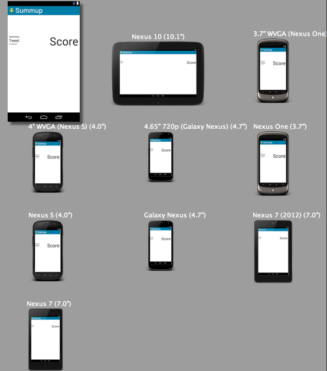Compatibility
Most important characteristic of a compatible device is the ability to install and correctly run an Android .apk file
Apps Availability
<uses-feature> in manifest file
<uses-feature android:name="android.hardware.bluetooth" />
<uses-feature android:name="android.hardware.camera" />
The other filters for apps availability in Google Play:
- <supports-gl-texture>
- <uses-configuration>
- <uses-library>
- <uses-permission>
- <uses-sdk>
Package Manager
Check feature availabilities at runtime
PackageManager packageManager = this.getPackageManager();
if (packageManager.hasSystemFeature(PackageManager.FEATURE_NFC)) {
Log.d(TAG, "Oh yeah, NFC is available. :)");
} else {
Log.d(TAG, "Shit, no NFC. :(");
}
Business Reasons
- List the countries an app is available in
- Select which carrier’s users are able to access the app